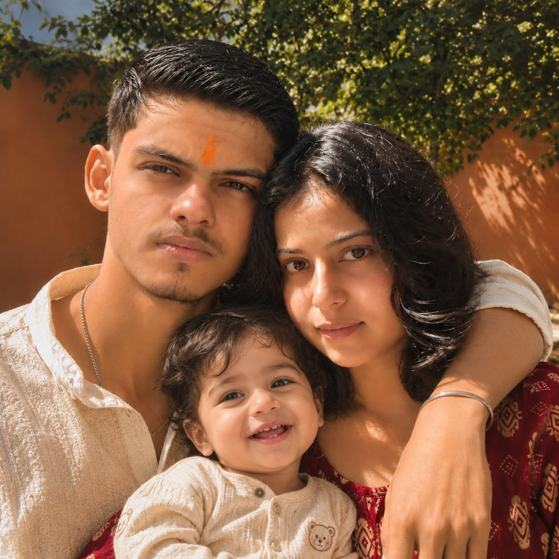

Some feelings are too big for a text, so I made you a little corner of the universe. No pressure, no perfect words needed. Just us, in the way I dream of us.
♥
for my baby jaan, my favourite person
THERE'S A LITTLE MORE⌄
a soft little place, just for you · আদর
Come here, my little baby jaan 🧸
You said you wanted ador—that sweet, gentle love where you can be a little kid for a minute, be pampered, and not have to find the right words. I hear you, shona. This corner is for exactly that. No need to be strong here. ♡

Just a little picture of a future I daydream about with you. Not a real memory, not a deadline—just a warm little dream. 🏡♡
If I could reach through this screen, I'd hold you close, brush your hair away from your forehead, and tell you: amar shona, you're so loved.
What kind of ador does my baby want right now?
I'm right here, baby jaan. ♡
Pick what you need and let me send a little bit of affection across the distance.
A little note is waiting for you, whenever you want one.
And baby, remember this…
🌷 It's okay to be clingy sometimes.You don't have to apologize for needing a little tenderness.
🧁 Your feelings are welcome.Even on messy days, you deserve softness and patient listening.
🕯️ No perfect words needed.You can say “ador chai” and I will understand you want comfort.
🤍 Love is in the everyday.I want my time, honesty, and actions to feel as warm as these words.
Made with love, not as a replacement for a real hug. Whenever you need a real call, you can ask me, baby. — Sanskar ♡
our song · a little dedication
Alfaaz — for my baby jaan 🌹
You once shared these words with me. This is the part of the song that makes me think of you, Debjani. Tap the heart to reveal my little dedication.
Alfaaz · Hamza Malik & Zain Zohaib
Ankhiyan De Samne Tu Baitha Rawein Der Tak Vekhan Tainu Raat Saari Chadhdi Saver Tak
Baaghan Vichon Main Te Tode Tere Layi Gulaab Ve Main Te Bas Kehnda Rehnda Aap Janaab Ve
Tu Te Taareyan Ton Vi Sohna Ae Tere Varga Koyi Na Hona Ae
Jinna Aanda Si Mainu Pyar Karna Ji Main Te Tere Naal Kar Leya Ae Main Te Chum Lavan Ohna Raahwan Nu Jithon Ik Vari Kadi Langheya Tu
Gallan Do Hi Ne Hor Koi Vi Nai Ya Te Tu Vi Ae Ya Te Koyi Vi Nai
Baby jaan, that line about kissing the paths you walk on makes me think of how deeply I want to cherish you. Not just with pretty words, but with the everyday tenderness you call ador. I wish I could hold you close and tell you, slowly: amar shona, you are so precious to me. — Sanskar ♡
A personal excerpt from the screenshot you shared. This page does not play or host the recording.
our little story
Little moments, big feelings
I don't need to invent a hundred memories to know the real ones matter. The ones I hold close are simple, and they're ours.
🎥 The video calls
When we're on video call and end up laughing together. I love that feeling when the screen is just a screen, but somehow you still make the distance feel smaller.
😂 The laughing-too-much part
Those moments when we're laughing and the whole day feels a little lighter. I want more of that—not a perfect love story, just more real moments with you.
🏡 The dream we can imagine
A little future I picture with you: a cottage in Sikkim, far from all the noise, with a cat, a dog, and maybe our little boy or girl one day—just us building a peaceful life together.
🏔️ 🏡 🐈 🐕
A quiet cottage. A warm home. Our little family. Not a promise that life will be perfect—just a dream I love imagining with you.
the things that matter
What I want you to feel with me
01Safe enough to tell me the truth, even when it's difficult to hear.
02Loved through consistent actions, not only beautiful words on a screen.
03Free to have your own feelings and take your own time. You never have to rush your heart for me.
04Chosen in ordinary moments too: in listening, honesty, patience, and trying again the right way.
open whenever you need
Little letters for my jaan
Pick whichever one feels right today. You don't have to be okay all the time.
Baby jaan, take a breath for a second. You don't have to solve your whole life today. Rest if you need to, cry if you need to, and let yourself be human. Your worth doesn't get smaller on a difficult day. I hope you give yourself the same kindness you'd give someone you love. ♡
My baby jaan, imagine me sitting beside you for a minute, listening to whatever you want to tell me. I wish I could turn a screen into a hug. Until then, I hope we get more calls, more laughter, and more little moments that make the distance feel less loud. 🫂
Baby jaan, you don't have to earn kindness by being cheerful, easy, or perfect. Your feelings matter even when they're complicated. I know words alone can't fix hurt, so I want to keep learning to show care through what I do, to listen properly, and to respect the time you need. No pressure to feel anything on command. ♡
Close your eyes and picture that Sikkim cottage with me: quiet mountains, a cat doing whatever cats want, a dog waiting for us, and a little family we may build someday if life takes us there. I imagine slow mornings and silly laughter. It's a dream, not a deadline—and I'd love to keep discovering the future with you, one honest day at a time.
Aay amar shona, come a little closer. Imagine a warm hug with no questions and no rush. I'd gently pat your head, kiss your forehead and remind you that you never have to be “grown up” all the time around me. If today has been too much, you can just be my soft little baby jaan for a while. No need to explain. You deserve tenderness. ♡
Hey my Debjani, shona, ek baar suno: you matter. Not because you're smiling, achieving, or having a perfect day—just because you're you. I want to keep proving my care through showing up, being truthful, listening and not disappearing when things feel complicated. Today, if all you need is a soft “I'm here,” then I'm here. ♡
Come, baby. Relax your shoulders. Unclench your jaw. Breathe however feels natural. Imagine sitting close, cozy and safe, without needing to talk at all. I'd keep my voice gentle and let you rest. The world can wait for a little while. Goodnight, amar shona. 🌙
tap a star, baby jaan
Our little universe ✨
Every star has a tiny message. Tap one and see what it says.
Choose a star, meri jaan ♡
a tiny no-pressure quiz
Pick our kind of forever
No wrong answers. This is just a cute little dream game.
Your turn, baby jaan.
two moments we're looking forward to
Our countdowns, baby jaan ♡
One step at a time until I get to see you, and one day closer to the future we dream about. The board-exam date below is only a planning estimate—not an official CBSE date.
Counting down to the estimated end of boards…
CBSE's official 2027 date sheet has not been confirmed in the information available. Change this date when your final exam date is announced.
2028 is our dream year. When the exact date is decided, choose it here and your wedding countdown will begin. ♡
from me to you
A letter, baby jaan
My Debjani, my baby jaan ♡
I know a beautiful page can't undo hurt, and I don't want to pretend that it can. Trust isn't something I can ask you to give me just because I say the right things. I want to earn it with honesty, patience, and actions that stay consistent after you close this website.
I love our video calls, especially when we're laughing together. Those moments feel so simple and so precious to me. And sometimes I picture that quiet cottage in Sikkim—with a cat, a dog, and maybe our little boy or girl someday. A peaceful life, away from all the noise, where we can make our own little home. It's a dream I hold gently, not something I want to pressure you with.
I want to keep making space for your real feelings, to hear you instead of rushing to defend myself, and to show you care in ways you can actually feel. I know I have to live that, not just write it here.
So if this page makes you smile, I'm happy. If it makes you emotional, that's okay too. You don't owe me a particular reaction. I made it because you matter to me, and I wanted you to have something soft to come back to.
More honest conversations. More laughing on calls. More little memories. And if life lets us, one day, that cottage and the family we dream about.
I love you, baby jaan. Let's keep choosing kindness, truth, and each other—one day at a time. ♡
your Sanskar ♡
made with love · no perfect words, just a real heart ♡